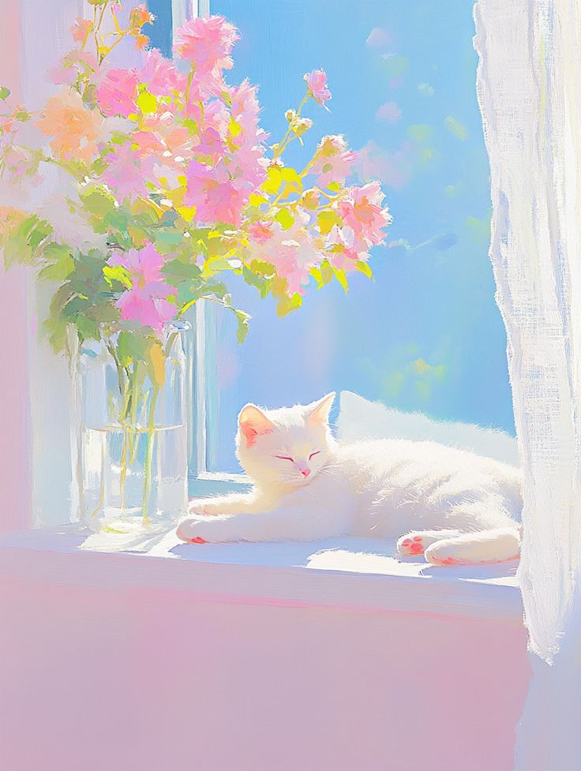
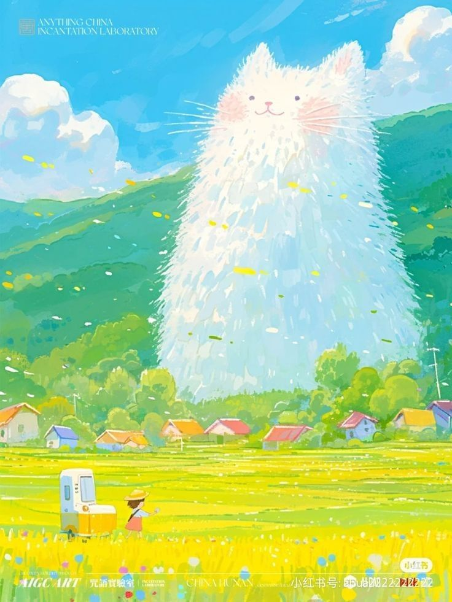
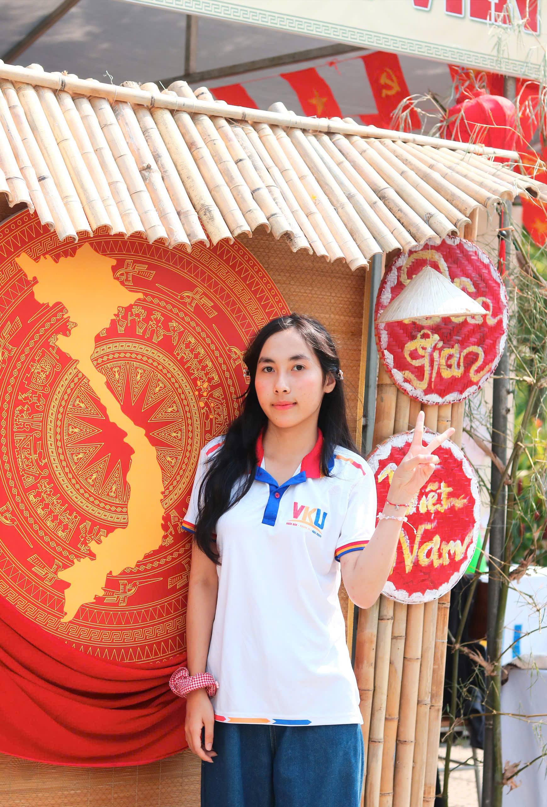
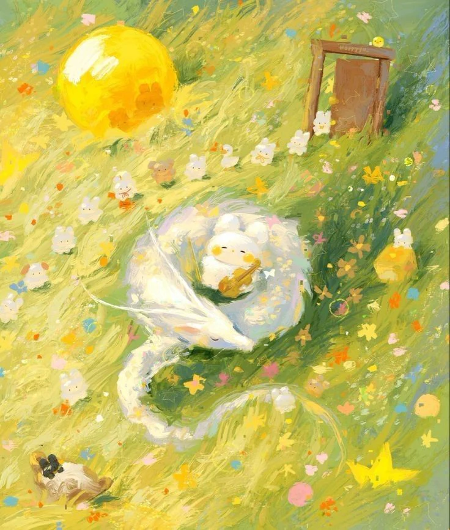
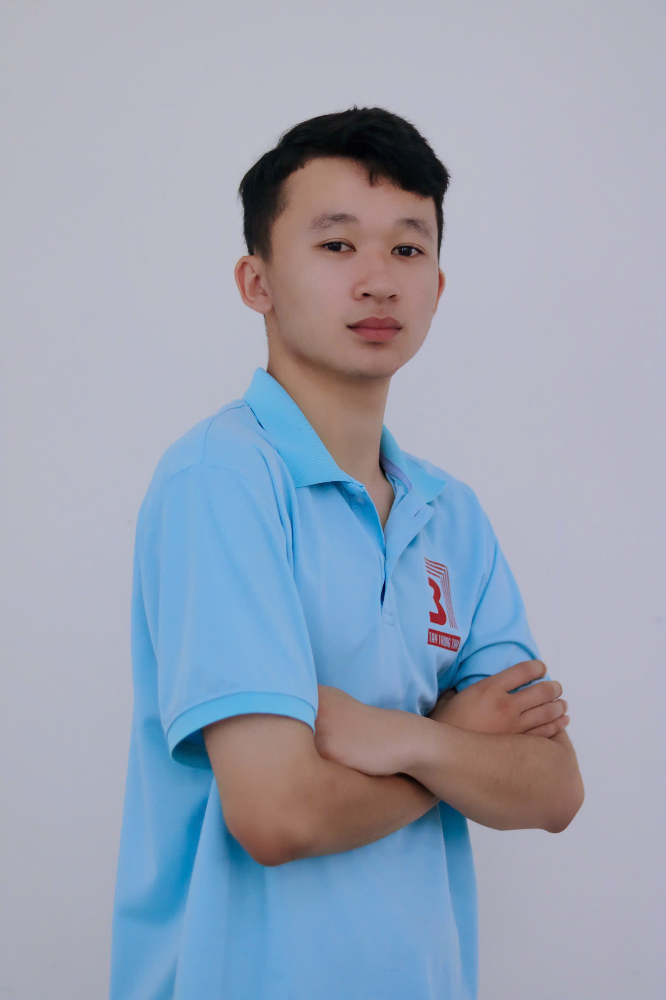
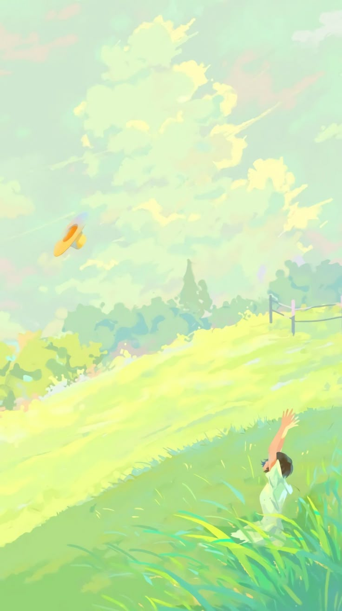

CHÀO MỪNG BẠN ĐẾN VỚI NGÔI NHÀ VĂN CHƯƠNG CỦA CHÚNG MÌNH



Có những ngày lòng bộn bề những lo toan, ta thèm tìm về với những khoảng lặng yên bình, nơi có vòm trời xanh ngát và tiếng lá xào xạc kể chuyện vu vơ. Hạ về, không chỉ mang theo cái nắng giòn tan của ngày mới, mà còn thắp lên sắc xanh mướt mát trên những nhánh cây trước hiên nhà. Những chùm hoa trắng li ti khẽ nở, dịu dàng tỏa chút hương thắm trong gió, tựa như những nốt nhạc trong ngần ngân lên giữa khúc ca mùa hạ. Đứng dưới bóng râm mát lành ấy, ngước mắt nhìn những tia nắng tinh nghịch lách qua từng kẽ lá, ta chợt nhận ra cuộc đời đôi khi chỉ cần những điều giản dị như thế. Cần một khoảng trời đủ rộng để mơ mộng, một nhành hoa đủ thắm để mỉm cười, và một trang sách mở ra để gửi gắm những suy tư. Văn chương suy cho cùng cũng giống như dòng nước mát lành tưới tẩm cho những tâm hồn đang cằn cỗi. Chạm tay vào con chữ, ta bắt gặp chính mình trong sắc xanh của lá, trong cái khoáng đạt của mây trời và trong cả những hoài niệm bảng lảng của thời gian. Hãy cứ để lòng mình neo lại nơi đây, giữa những nhành xanh và hoa trắng, để cảm nhận một mùa hạ thật dịu dàng, thật thơ...

Có những chiều gió lộng, ta dừng chân bên quán quen nơi góc phố, ngắm nhìn những vệt nắng cuối ngày lười biếng ngả bóng dài trên mặt đường. Mùa hạ không chỉ có những oi ả, rực rỡ, mà còn có những khoảnh khắc dịu êm khi hoàng hôn buông xuống, trả lại không gian tĩnh lặng cho vạn vật. Tiếng xe cộ thưa dần, chỉ còn tiếng lách cách của những vòng xe đạp lướt qua, gợi nhắc về một thời học trò đầy mơ mộng và ngây ngô dưới mái trường xưa.


Thời gian cứ thế trôi đi lặng lẽ, mang theo những mùa hoa đi qua và đón nhận những hành trình mới phía trước. Giữa những bộn bề và vội vã của cuộc sống mưu sinh, việc tìm cho mình một khoảng lặng để nhìn nhận lại bản thân là điều vô cùng cần thiết. Đừng quên nuôi dưỡng những ước mơ thuở ban đầu, dẫu cho hành trình phía trước có nhiều gian nan, thử thách. Hãy giữ cho trái tim luôn ấm nóng và tràn đầy hy vọng giống như ánh nắng rực rỡ của những ngày hè.


Cơn mưa rào mùa hạ đến bất chợt rồi đi cũng nhanh như khi nó đến, để lại bầu không khí trong lành và mùi đất ẩm nồng nàn khó tả. Những giọt nước đọng lại trên bậu cửa sổ tựa như những mảnh vỡ của kỷ niệm, lung linh và trong suốt. Ngồi bên bàn học, lật mở từng trang nhật ký cũ, ta chợt mỉm cười khi nhận ra bản thân đã đi qua biết bao mùa nhớ, trưởng thành hơn sau những vấp ngã và biết nâng niu hơn những hạnh phúc giản đơn của hiện tại.

Âm nhạc và văn chương luôn là liều thuốc kỳ diệu xoa dịu đi những mệt mỏi sau một ngày dài lo toan áp lực. Khi tiếng vĩ cầm cất lên hòa quyện cùng tiếng ve ngân vang ngoài bụi cây, không gian như ngưng đọng lại, nhường chỗ cho những xúc cảm thăng hoa. Hãy để tâm hồn mình được thả lỏng hoàn toàn, trôi bồng bềnh theo từng nốt nhạc trầm bổng, để thấy rằng cuộc đời này vẫn còn biết bao điều tươi đẹp và đáng yêu đang chờ đợi chúng ta khám phá.
"Học Văn không chỉ là ghi nhớ..."